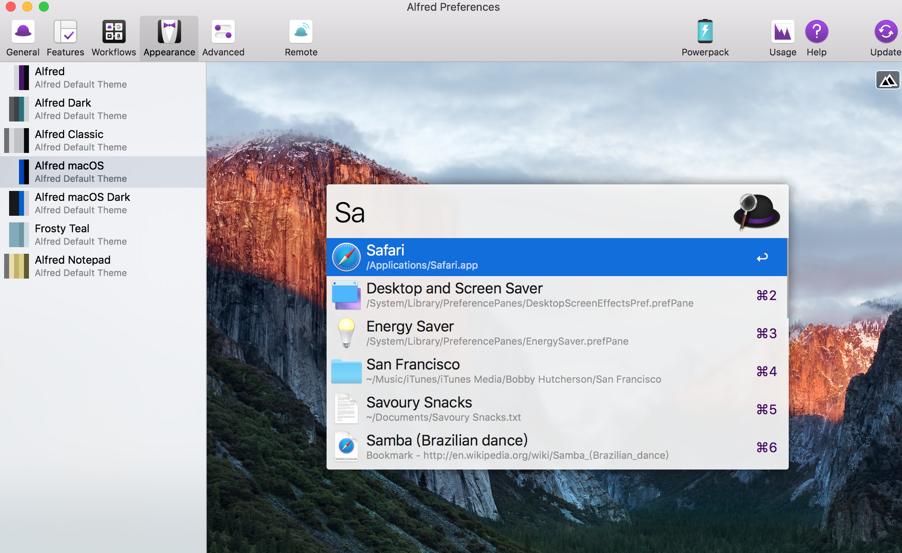
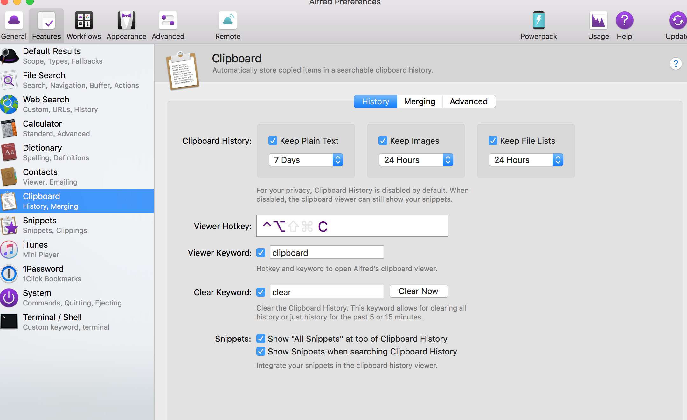
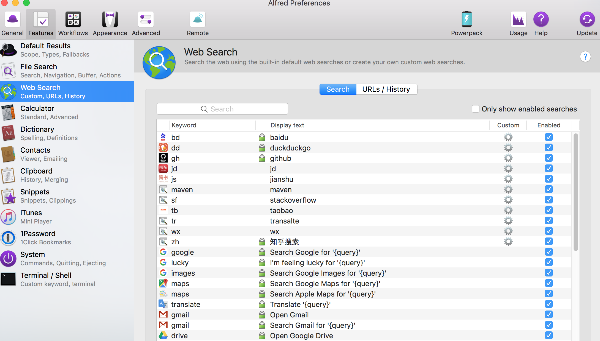
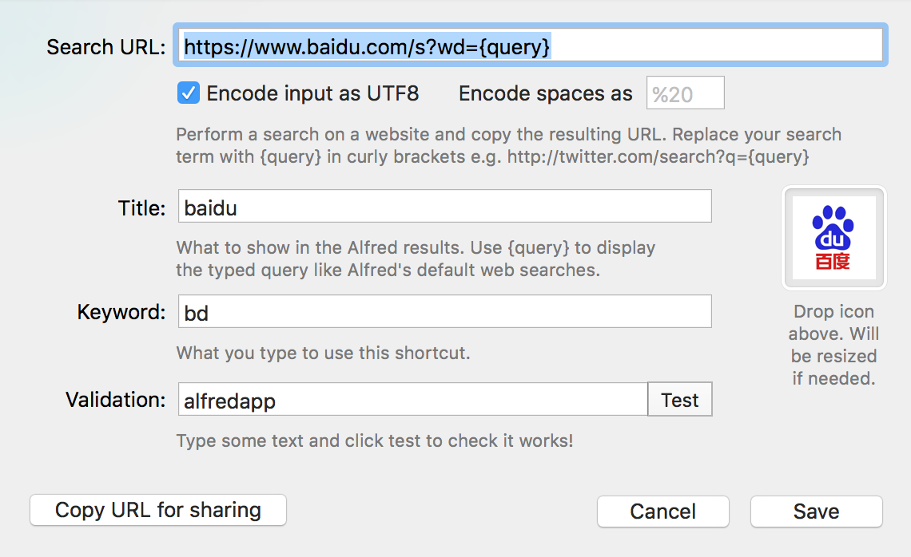
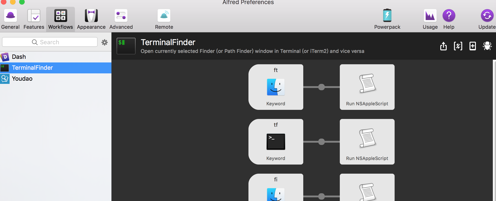
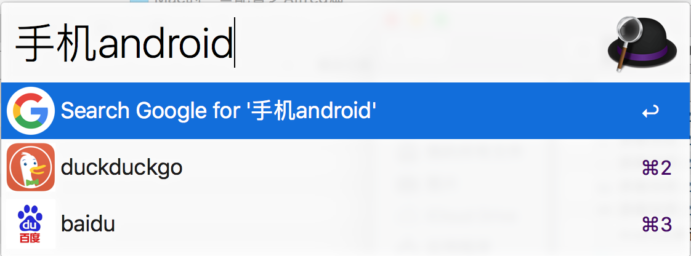
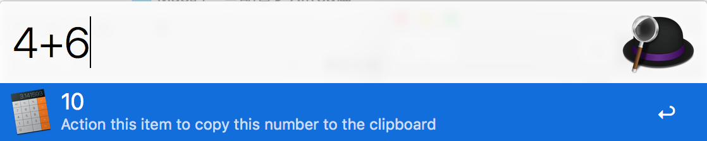
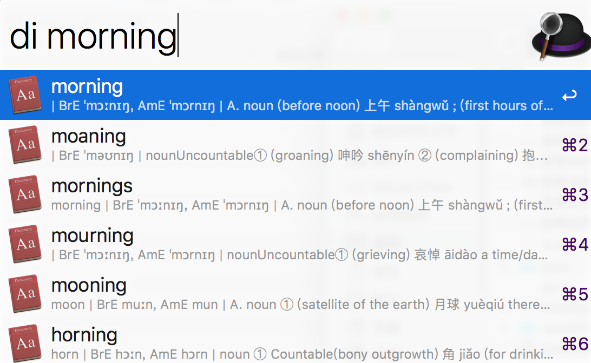

本篇中主要内容是Alfred软件的一些配置：自定义web搜索，更改默认搜索，一些Workflows
Alfred号称Mac中的效率神器，可根据自己喜好深度自定义
一般配置
首页
打开preferences->General页面中
Alfred Hotkey设置使用快捷键
where are you 选择你的地区，在使用自带搜索时会搜索到相对应的地区信息
外观

Clipboard（剪切板）
设置按键，设置保持时效

自定义web搜索
添加自己常用的网站搜索如github、京东、天猫、知乎等
进入到preferences->Features－>Web Search


常用的有：
1 | 百度： |
Workflows
自己用的，一个有道，一个是终端相关

其他的有知乎上的推荐：
Mac效率神器Alfred以及常用Workflow
借助 Alfred 2 的 Workflows 功能可以做哪些好玩的事情？
其他
其他功能的展示，web搜索，本地搜索，等灯
搜索功能

计算器

词典

词典
还有许多的功能等你去发现，欢迎交流